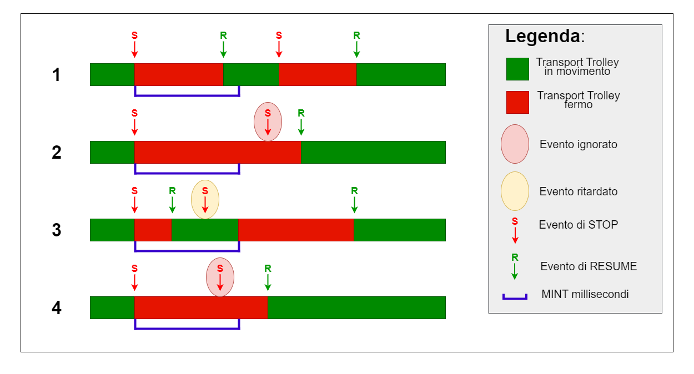
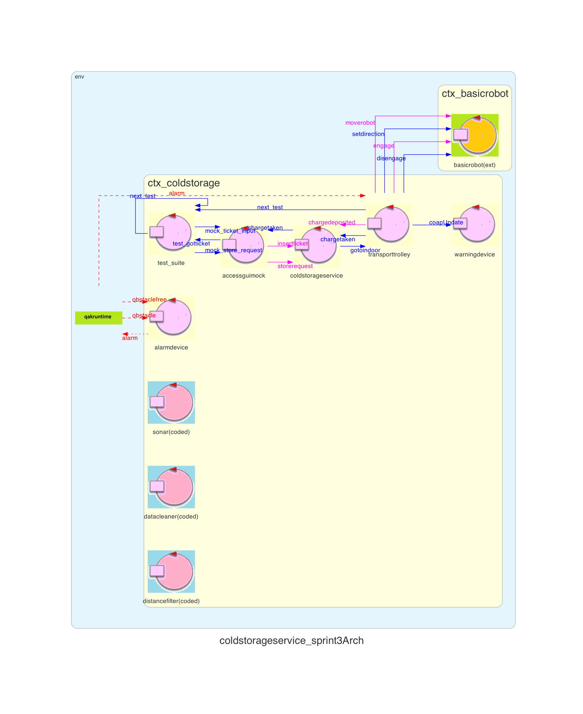

Introduction
Lo Sprint3 è il naturale proseguo di quanto realizzato nello Sprint2.Requirements
Descrizione del
TemaFinale23
Goals Sprint 3
- Identificare ed analizzare tutti i problemi relativi ai requisiti che coinvolgono la alarm device e il warning device
- Integrare al sistema realizzato nello Sprint2 la alarm device e il warning device, che esprimono gli Alarm Requirements
- Sviluppare il software ed eseguirlo su una scheda Raspberry Pi
- Testare il sistema
Requirement analysis
Chiarimenti del committente
L'interazione con il committente ha permesso di chiarire alcuni aspetti del progetto:Chiarimenti con il committente
Sistema
Il macro-componente identificato che si va ad aggiungere al prodotto degli sprint precedenti è warning ed alarm devices:
- un Led
- un Sonar
- una scheda Raspberry Pi che identificherà il nodo computazionale dei due devices
- cavetti jumper femmina-femmina per permettere i collegamenti tra il Sonar,Led e Raspberry Pi
Analisi
Dai requisiti espressi nel Tema Finale e dalle analisi già effettuate negli Sprint0, Sprint1 e Sprint2, in questo Sprint occorre analizzare le entità:- alarm device, che si occupa di notificare quando una soglia DLIMT viene violata, al fine di fermare il Transport Trolley
- warning device, che si occupa di mostrare lo stato del Transport Trolley tramite un Led
Inoltre questi rappresentano gli Alarm Requirements ceh dovranno essere sempre soddisfatti per fare in modo che il Transport trolley si comporti in linea con i requisiti forniti dal committente.
alarm device
L'alarm device è un componenete costituito da un Sonar che è in grado di misurare la distanza tra esso ed un ostacolo presente di fronte al medesimo. Quando il Sonar rileva una distanza minore di una soglia DLIMT il Transport Trolley deve essere fermato, fino a che non viene rilevata una distanza maggiore sempre di DLIMT.Nota importante è che il Transport Trolley non può essere fermato due volte consecutive entro un lasso di tempo pari a MINT millisecondi, bensì dovrebbe intercorrere un tempo MINT millisecondi tra uno stop e quello successivo.
warning device
Il warning device è un componenete costituito da un Led che comunica lo stato del Transport trolley. Il Led può rappresentare 3 stati diversi:- Transport Trolley in HOME: il Led è spento
- Transport Trolley in movimento: il Led lampeggia con un intervallo costante
- Transport Trolley è fermo: il Led è acceso
Analisi del Problema
Innanzitutto gli Alarm Requirements devono essere sempre soddisfatti:Gli Alarm Requirements devono essere sempre soddisfatti per permettere il corretto funzionamento del Transport trolley
I componenti warning device e alarm device devono essere in esecuzione all'interno di un Raspberry Pi
Il Transport Trolley deve fermarsi quando il Sonar rileva una misura minore di una soglia DLIMT
Una volta che la soglia misurata dal sonar viene superata per
eccesso, dopo che il Transport Trolley è stato fermato per via della soglia violata, il Transport Trolley tornerà a svolgere il compito su
cui stava lavorando quando è stato fermato
- Arriva uno stop dopo MINT millisecondi ed in quel momento il Transport trolley è in movimento
- Arriva uno stop dopo MINT millisecondi ed in quel momento il Transport trolley è ancora fermo dallo stop precedente
- Arriva uno stop prima MINT millisecondi ed in quel momento il Transport trolley è in movimento
- Arriva uno stop prima MINT millisecondi ed in quel momento il Transport trolley è ancora fermo dallo stop precedente
Gli scnenari 3 e 4 presentano uno stop prima del tempo concesso. Andrebbe valutato come si vuole agire:
- se ignorare le richieste che arrivano prima del dovuto
- se prendere in considerazione una coda di eventi che sono arrivati ma non ancora considerabili perché gli Alarm Requirements non lo permettono
Se invece di quanto riportato sopra, arriva uno stop prima di MINT millisecondi ed il Transport trolley è in movimento(scenario 3) allora bisogna aspettare, mettendo in coda l'evento, l'intervallo minimo prima di fermare il Transport Trolley. Se entro a MINT oltre allo stop, arriva anche la resume allora non si dovrà fermare.
Infine per lo scenario 2: se il Transport Trolley riceve uno stop dopo MINT millisecondi ed è ancora fermo dallo stop precedente allora si dovrà semplicemente ignorare l'evento in quanto il Transport Trolley è già fermo. In seguito viene riportato il riassunto con un grafo degli eventi numerato per scenario:

Gestire gli stop/resume del Transport Trolley secondo la politica esplicitata nel grafo degli eventi sopra riportato
Nota importante: l'evento alarm viene recepito direttamente dal basicrobot23 ma bisogna occuparsi comunque di inviare al Transport Trolley tale informazione per informarlo dell'accaduto, siccome la reply del moverobot(coordinate) in casi di fallimento non restituisce la loro causa. Per quanto riguarda invece la resume: il Sonar quando rileverà di nuovo una distanza che permetterà lo sblocco del Transport Trolley verrà emesso un evento che il Transport Trolley riceverà e si impegnerà a risbloccare il robot dall'operazione che si era fermato, riprendendo così la sua routine.
Siccome il Led è relativo esclusivamente allo stato del singolo Transport Trolley si ritiene lecito lasciare a lui il controllo del Led, utilizzando il pattern Observer che permette al led di venire notificato ogni volta che un cambio di stato a lui interessante succede. Il led deve considerare anche quando il robot è fermo perché sta caricando/scaricando il carico. Quindi il led deve rimanere aggiornato sia dal transport trolley che dal warningdevice, proprio per questo fatto di aver bisogno di ascoltare più attori si è deciso di adottare questo pattern. Utilizzando coap come protocollo di invio messaggi per il nostro pattern Observer, siccome facente parte integrante del QAK, c'è il rischio remoto che qualche messaggio vada perso dato che si utilizza il protocollo di trasporto UDP. Non si valuta questo problema come critico in quanto la perdita di notifica di uno stato comprometterebbe il comportamento del led solo per breve tempo(indicativamente 3 secondi data la stanza presa in analisi), cioè fino a quando non viene ricevuta un altra notifica
Il Transport Trolley è l'incaricato di gestire il Led adottando il pattern Observer
In particolare si valuta di adottare più attori, ognuno con uno scopo ben preciso:
- Un attore per il Sonar che si occupa di misurare le distanze e comunicarle tutte sul canale
- Un attore che filtra tutte le misurazioni prodotte dal Sonar e filtrare solo quelle che no appartengono al range che il sonar è in grado di rilevare
- Un attore che ha come compito quello di notificare al Transport Trolley quando una distanza minore di DLIMT viene misurata
Gestione delle misurazioni ripartita tra tre attori
Interazioni
| Messaggio | Mittente | Destinatario | Semantica messaggio | Descrizione |
|---|---|---|---|---|
| coapUpdate | transportrolley | warningdevice | Dispatch | Semantica Dispatch perchè informa al warning device lo stato che il led deve assumere adottando il pattern Observer. |
| alarm | alarmdevice | transportrolley basicrobot |
Event | Semantica Event perchè informa a chi interessato che il robot si deve fermare. |
| obstacle | distancefilter | alarmdevice | Event | Semantica Event che fa parte della pipeline dei gestori delle misurazioni del sonar che in questo caso notifica ad alarmdevice che la distanza misurata ed inferiore alla soglia prestabilita DLIMT. |
| obstaclefree | distancefilter | alarmdevice | Event | Semantica Event che fa parte della pipeline dei gestori delle misurazioni del sonar che in questo caso notifica ad alarmdevice che la distanza misurata ed superiore alla soglia prestabilita DLIMT. |
| resume | warningdevice | transportrolley | Event | Semantica Event che serve al transportrolley per capire quando può far ripartire il robot. |
Architettura logica
Codice QAK per la modellazione del sistema: SonarLed.qak
Il sistema da noi modellato, presenta la seguente architettura logica:[NON E' FINALE! MANCA LA GUI][manca anche il resume event]

Inoltre per il momento si può adottare un sonar simulatore che genera misure a scelta, e successivamente un sonar fisico.
Test plans
| Test | Entità coinvolte | Scenario | Comportamento atteso |
|---|---|---|---|
Project
Siccome nell'analisi del problema si è utilizzato un simulatore del sonar per creare il QAK, il passo successivo è quello di integrarne uno fisico. Per fare ciò si adotta un borker gratuito e a disposizione di tutti come tcp://mqtt.eclipseprojects.io che permette l'invio e la ricezione di eventi tra dispositivi fisicamente non collegati ma connessi alla rete internet.Per comunicare dati utilizzando MQTT bisogna definire un topic che definisce il canale di utilizzo, utile per organizzare canali logici al solo fine di poter distinguere categorie di eventi che vogliamo raggruppare o meno. Nel nostro caso si è adtootato unibo/sonar/events come topic per comunicare i dati dal Raspberry al ColdStorageService, il quale si impegna a ricevere le misurazioni "grezze" del sonar e prima di considerarle vengono un po lavorate da:
- SonarMQTTReceiver: si impegna a ricevere i dati "grezzi" del sonar tramite MQTT e poi propaga l'evento all'interno del contesto ctx_coldstorage
- DataCleaner: pulisce i valori scartando le misurazioni che non sono comprese in un range che va da 2 a 150 cm
- DistanceFilter: riceve i dati puliti dal DataCleaner e invia un evento obstacle o obstaclefree qualora le misurazioni rispettivamente siano inferiori di DLIMT oppure maggiori
Anche per comunicare con il led si utilizza MQTT, mandando un messaggio con l'ausilio di un UN ATTORE SCRITTO IN KOTLIN?? ed utilizzando unibo/led/events come topic.
Per la fase di prototipazione il sonar e led saranno collegati ad un Raspberry tramite dei cavetti jumper femmina-femmina.
Il Software lato Raspberry sarà organizzato nella seguente maniera:
- Un programma python che si occupa di utilizzare il sonar per estrapolare le distanze misurate
- Un programma python che cattura tali dati da standard input e scatena degli eventi al borker e topic citati nei paragrafi precedenti
Qui vengono riportati i file che definiscono il software necessario per il Raspberry: sonar.py controllerMQTT
La scelta di Python è motivata dal fatto che si presenta un linbguaggio ideale per la prototipazione: rapido, con molte librerie di supporto e ben documentato. Successivamente se si desiderano performace migliori si può pensare di ottimizzare scrivendo codice di più basso livello.
I pin del Raspberry coinvolti sono:
- GPIO 4: pin TRIG sonar
- GPIO 27: pin ECHO sonar
- GPIO 25: pin led
Conclusioni
Gli output dello sprint3 sono:
- warning device
- alarm device
Goals Sprint 4
Si possono definire in seguito i goal relativi allo Sprint4:
By
Tassinari Gabriele, email: gabriele.tassinari2@studio.unibo.it
Baraldi Leonardo, email: leonardo.baraldi@studio.unibo.it
Koss Krystian, email: krystian.koss@studio.unibo.it


GIT repo: https://github.com/4utotune/ColdStorageService/
Tassinari Gabriele, email: gabriele.tassinari2@studio.unibo.it
Baraldi Leonardo, email: leonardo.baraldi@studio.unibo.it
Koss Krystian, email: krystian.koss@studio.unibo.it
GIT repo: https://github.com/4utotune/ColdStorageService/